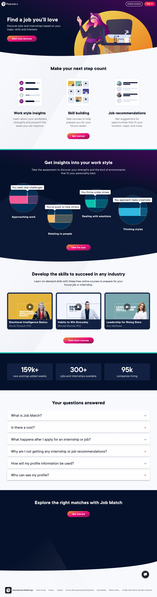
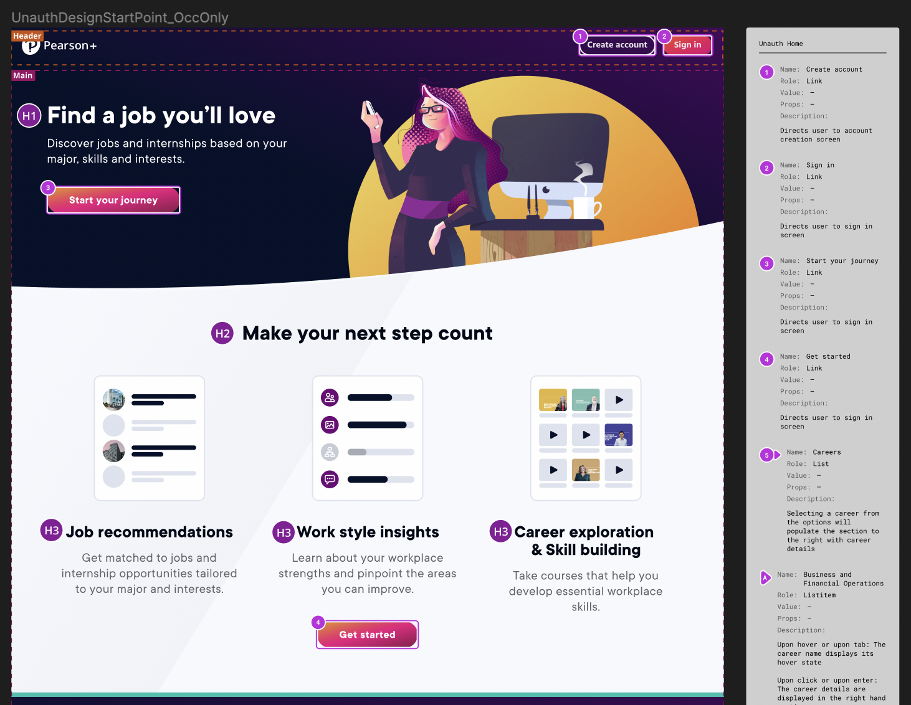
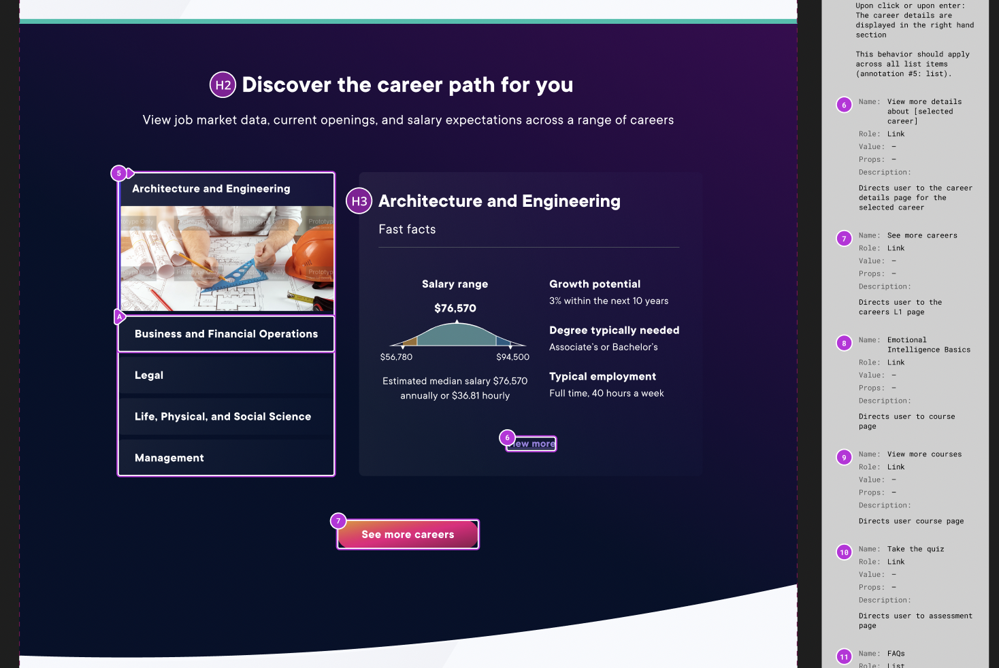
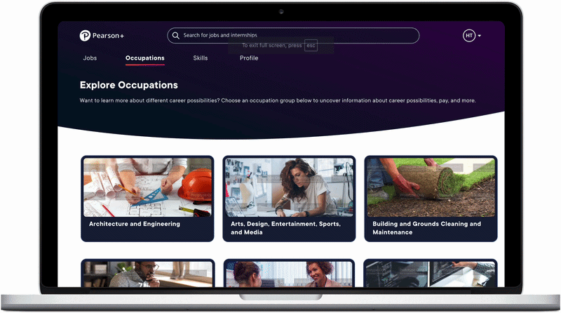
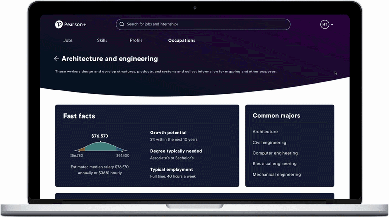
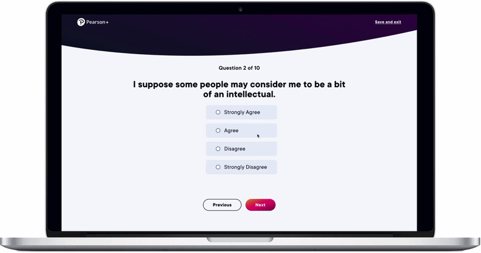
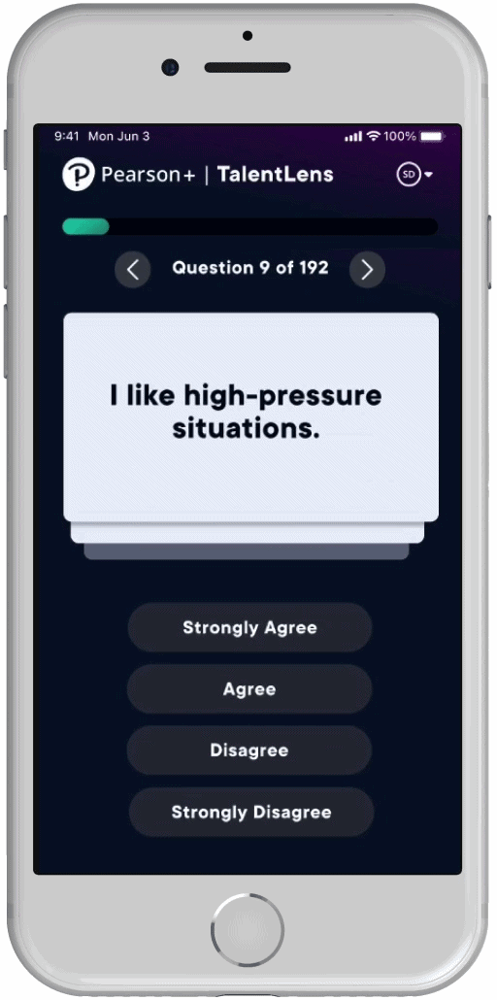
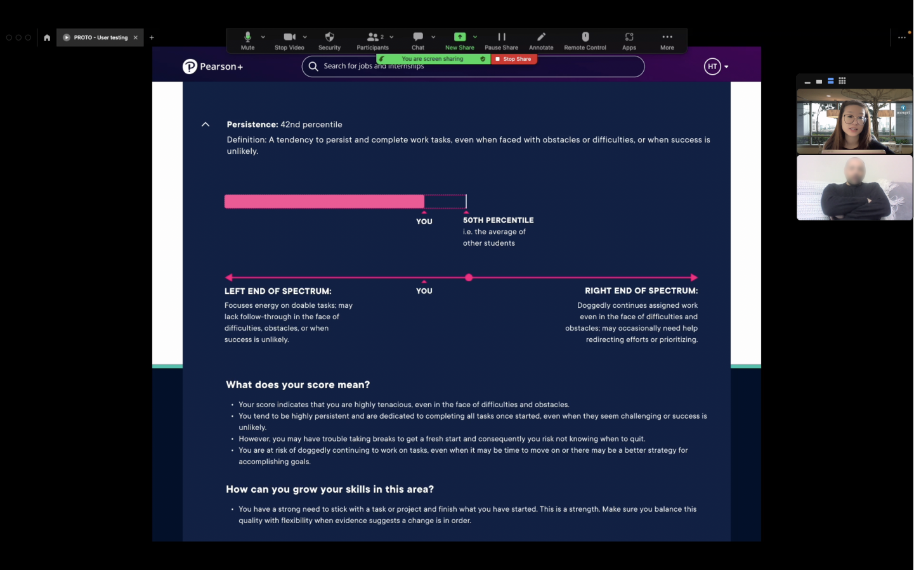
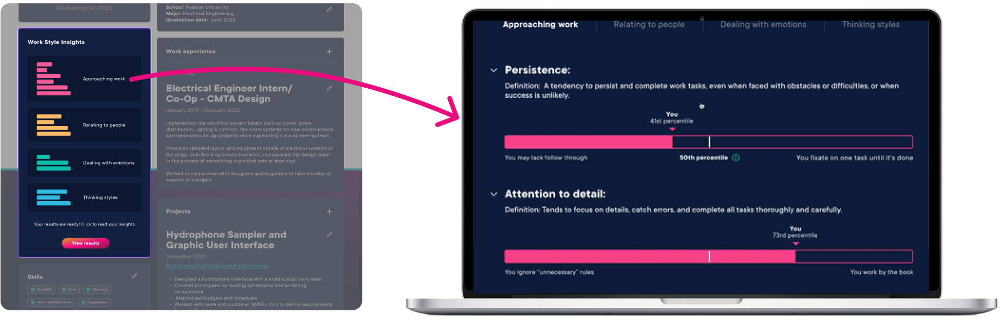
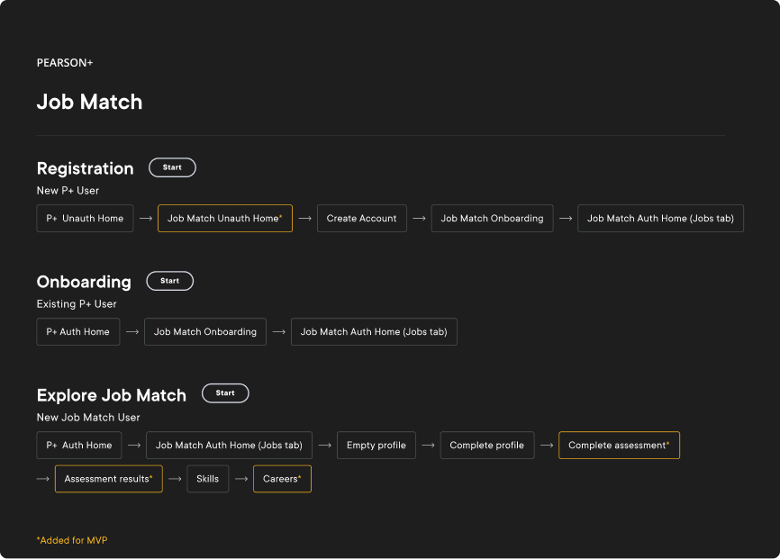

Pearson+ Job Match: MVP
Career-exploration tool · Pearson+ digital learning platform · 2022–2023

Impact
-
01
Took Job Match from a 10% pilot to a public MVP.
The launch opened the product from a limited subset of subscribers to all potential users, including people who had never used a Pearson product.
-
02
Designed and shipped three net-new surfaces.
The unauthenticated home page, Careers, and the Work Style Lens™ assessment and results, each built to serve the wider, more varied MVP audience.
-
03
Owned accessibility end-to-end.
Partnered with the accessibility team so every MVP addition met WCAG 2.1 AA success criteria before handoff.
-
04
Shaped how results are communicated.
Moderated user testing led to snapshot summaries and progressive disclosure, so students could grasp their Work Style results at a glance and act on them.
Background
Pearson+ is a digital learning platform for college students, offering access to digital textbooks, interactive study tools, and educational channels. The latest addition, Job Match, helps students explore career paths, identify skills, and optimize their job searches.
This case study focuses on the evolution of Job Match from POC (Proof of Concept) to MVP (Minimum Viable Product) and highlights the UX contributions that made it possible.
Problem space for Job Match
Problem
- Resumes lack depth: students struggle to convey skills and potential due to limited work experience.
- Skills gap awareness: many students are unaware of their marketable skills.
- Unclear career path: students often lack a clear plan to connect their education to job opportunities.
Solution
An intelligent platform that offers:
- Skill identification: recognizes skills gained through education.
- Personalized insights: understands user motivations and preferences to offer tailored recommendations.
- Job matching: connects students with relevant internships and jobs, ensuring employers find qualified candidates.
Project details
UX Team
Timeline
Main objectives for MVP
For the MVP launch, Job Match expanded from serving 10% of Pearson+ subscribers to serving all potential users, including those unfamiliar with Pearson products. The key goals defined by the product team were to:
- Accommodate diverse entry points (e.g. organic search vs. the Pearson+ platform).
- Enable customization for different job-search stages (e.g. exploratory freshmen vs. upperclassmen with clear career plans).
Additions made between the POC and MVP launches, with the above objectives in mind
1 · Unauthenticated home page
Visual & interaction design · Esther Nam & Designer 2
For MVP, we added a public home page for unauthenticated users, introducing Job Match to a new audience. Prior to the MVP release, Job Match was only available from the Pearson+ authenticated home to a limited selection of users.

Accessibility annotations I met regularly with our accessibility team to review annotations for any MVP additions, ensuring that all intended interactions passed AA success criteria for WCAG 2.1 standards.


2 · Careers
Wireframes: Designers 2 & 3 · Visual & interaction design: Esther Nam
The Careers feature was designed to provide tailored career guidance, pulling in data from the O*NET database of occupational information.
We added interactions for exploration at the career grouping level and the individual occupation level, catering to both those beginning their career journey and those actively applying for positions. In both scenarios, users can discover roles and skills aligned with their interests.

Exploration at the career-grouping level — each group opens into the occupations it contains.
At the occupation level — Fast Facts (median salary, growth potential, typical employment) and common majors.3 · Work Style Lens™ (WS-Lens)
User testing & visual design · Esther Nam
Job Match pulled in the Work Style Lens™ assessment to help students gauge career fit based on their working styles. When designing the assessment experience, I prioritized making it as painless as possible to fill out, as the actual assessment is quite lengthy. From discussions with the assessment creators, I also learned that the WS-Lens is most accurate when users provide initial reactions instead of overthinking their answers.
I displayed one question at a time, allowing users to focus on initial reactions rather than analyzing their answers. Users could navigate back to correct errors, though the design and micro-animations emphasized forward momentum. I would like to add a progress bar in a future iteration so students can visualize their completion; the development scope was limited for MVP.

The assessment on desktop — one question at a time, with forward-momentum micro-animations.I also started designing the mobile experience for the assessment, as well as for several other MVP features, though mobile efforts were ultimately put on hold.

In-progress mobile design for the assessment.I moderated several user tests to get a better sense of how students react to personalized feedback — both positive and negative. I also delved into how to keep their attention when communicating results. In particular, I was interested in how to incentivize students to act on the feedback they received.

Collaborating with our copywriter, we created snapshot summaries so users could understand the gist of their results at a glance. We relied on progressive disclosure to break down the results they may be particularly interested in, while making the affordances to do so visually clear. We also highlighted any suggested actions based on their score.

Click to enlargeOverall, we worked to present the assessment questions and results in a clear, actionable way while adhering to technical constraints to stay within the scope of MVP. Pulling in WS-Lens to empower users early in their career exploration supports the 2nd MVP objective.
End-to-end prototype
Password: Turbo
The flows below link out to the end-to-end Figma prototype (just click Start next to the user flow you want to view). The sections of Job Match that were newly added for MVP are marked by yellow borders.

Looking back
Job Match shipped to all Pearson+ users in mid-February 2023. Shortly after launch, leadership shifted investment toward other parts of the portfolio and the product was wound down. Still, the MVP shipped a complete, accessible public experience. What I carry forward is the work itself: opening a closed tool to a broad audience, designing for unknown entry points, and making assessment results feel clear and actionable.